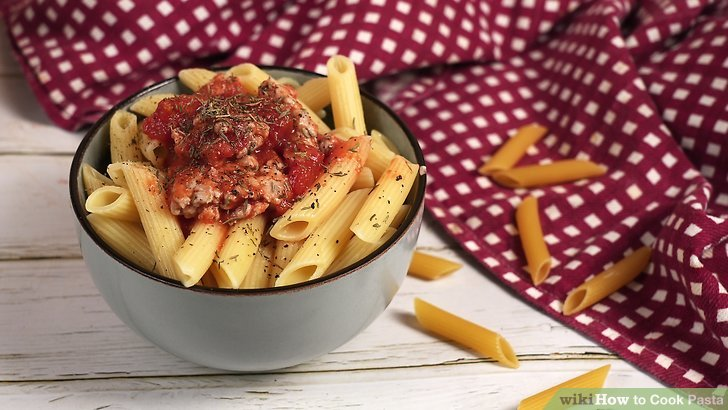

Pasta Recipe

Ingredients
- 225 gm pasta penne
- 4 cloves garlic
- 2 teaspoon basil
- salt as required
- 2 pinches powdered black pepper
- 2 red chilli
- 450 gm roma tomato
- 1/2 teaspoon chilli flakes
- 1 tablespoon parsley
- 1 1/2 tablespoon extra virgin olive oil
- 3 cup water
Steps for making pasta
- Fill a large saucepan with water, put the lid on and bring to the boil over a high heat.
- Add a good pinch of sea salt.
- Once the water is boiling, stir in the pasta.
- Cook the pasta according to the packet instructions. To tell if your pasta is cooked, try a piece about a minute or so before the end of the cooking time.
It's ready when it's soft enough to eat, but still has a bit of bite. The Italians say 'al dente'.
- Drain the pasta in a colander over the sink. Now it's ready to toss through your favourite sauce - it's best to do this in the pan, adding splashes of cooking water and mixing as you go until your sauce coats the pasta and is the perfect consistency.
There are Several choice's of sauce after this we shall go with Pasta peperonata
Pasta peperonata Step's
- Deseed and slice the peppers and put them in a large frying pan over a medium heat with a little olive oil and a pinch of sea salt and black pepper. Place a lid on, and cook slowly for 15 minutes until softened. Don't rush this too much, as cooking the peppers slowly like this really helps to bring out the flavour.
- While the peppers are cooking, peel and finely slice the onion, and peel and grate the garlic. Finely chop the parsley leaves and reserve the stalks.
- Add the onion to the pan and cook for a further 20 minutes. Then add the garlic and parsley stalks and toss around, keeping everything moving in the pan. Cook for about 3 minutes most. Have a little taste, and season with a bit more salt and pepper. Add the vinegar - it will sizzle away, so give everything a good toss.
- Grate the Parmesan and add one handful of the Parmesan and the mascarpone or crème fraîche, if using, and turn the heat down to minimum while you cook the pasta.
- Meanwhile, put a large pot of salted water on to boil. Add the pasta to the boiling water and cook according to the packet instructions. When cooked, drain in a colander, reserving some of the cooking water.
- Put the peppers, pasta and parsley leaves into a large warmed bowl. Give them a good toss together, then add a little of the pasta cooking water and a few good lugs of extra virgin olive oil to coat the pasta nicely. Serve straight away sprinkled with the rest of the Parmesan.
THANK YOU